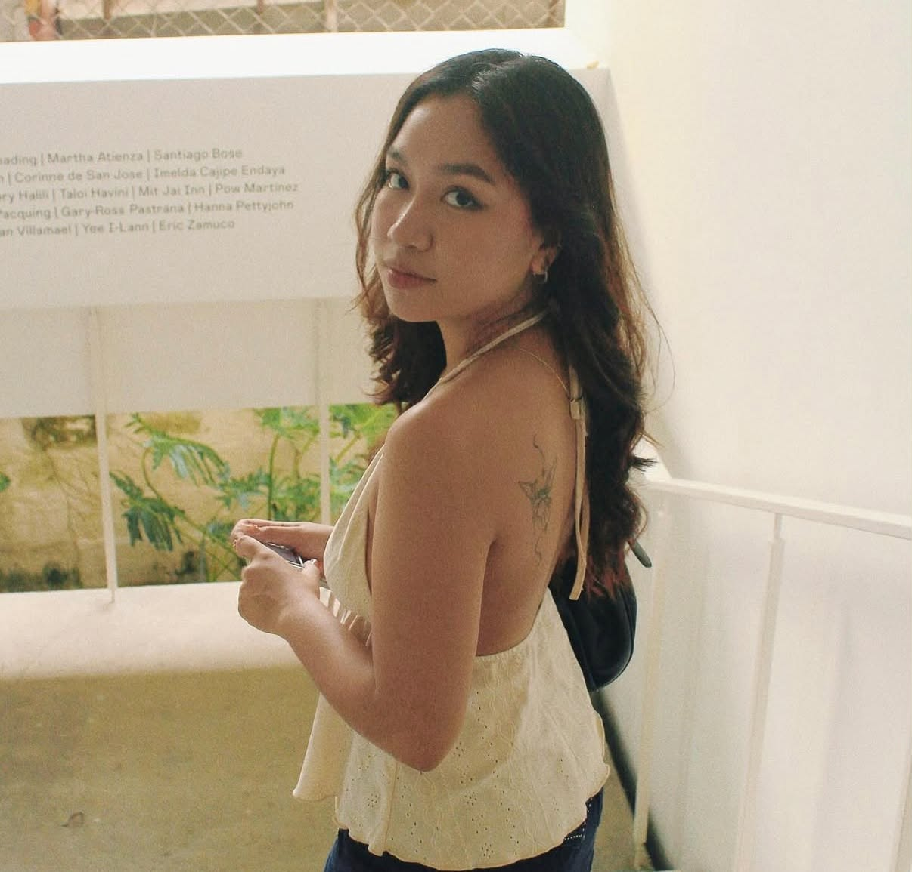
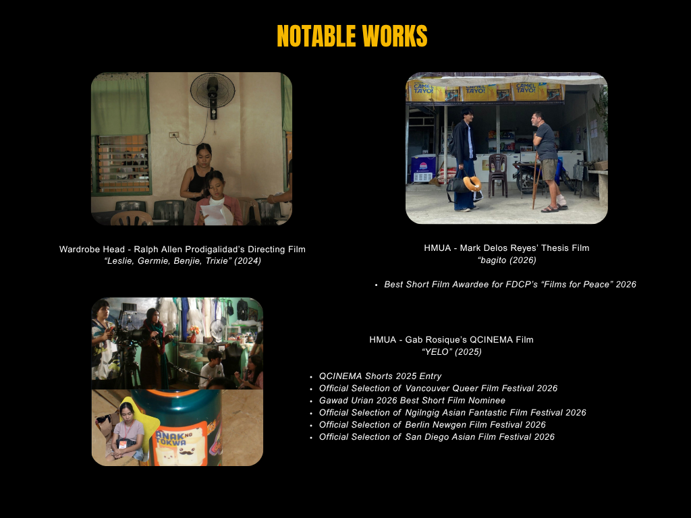

About Me
Juliane Delleopac, or Juls, is a third-year Bachelor of Arts in Multimedia Studies student at the University of the Philippines Open University. She is interested in film, multimedia, and creative storytelling, and enjoys learning through hands-on experiences and collaborative projects.
Juls is an active member of UP Cinema, where she has taken on different roles in the organization. Last year, she served as Vice President for Finance and Marketing, a position under the organization's Executive Board, where she handled financial planning, budgeting, marketing initiatives, and other organizational projects. She also served as Promotions Head for Piling Obrang Vidyo (POV) for two consecutive years. POV is an annual interschool film festival organized by UP Cinema, showcasing films created by student filmmakers from different schools in the Philippines. Through her role, Juls worked on promotions, publicity, and audience engagement for the festival.
She is currently part of the Internal Affairs Committee, where she focuses on engaging with members and helping build a stronger community within the organization. Outside of academics and organizational work, Juls enjoys watching films, listening to music, and exploring different forms of storytelling. She continues to develop her skills in multimedia and film while discovering new creative interests along the way.
Things I Love
- Photography and watching films
- K-pop, especially DAY6, SEVENTEEN, and Xdinary Heroes
- Playing billiards
- Playing Mobile Legends
- Spending time with my dogs
Passion Projects
Juls has been involved in multiple student film productions over the past three years, taking on various roles such as wardrobe and costume, hair and makeup, set decoration, and props master. She also gained experience as a script continuity supervisor for a thesis film, and is currently working on a UPFI directing film as a production designer. Through these passion projects, she continues to explore her interest in filmmaking, develop her skills behind the scenes, and gain hands-on experience, wishing to be a part of the Camera Department someday.

Contact Me
Email: jmdelleopac@up.edu.ph